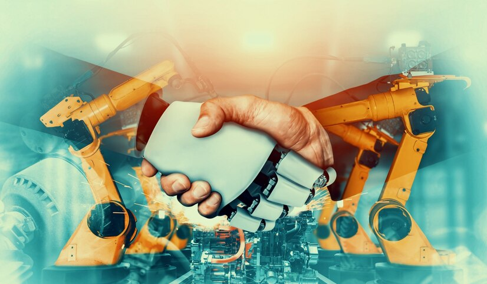

Revolusi Industri
Revolusi Industri terjadi pada periode antara tahun 1760-1850 di mana terjadinya perubahan secara besar-besaran di bidang pertanian, manufaktur, pertambangan, transportasi, dan teknologi serta memiliki dampak yang mendalam terhadap kondisi sosial, ekonomi, dan budaya di dunia. Revolusi ini menyebabkan terjadinya perkembangan besar-besaran yang terjadi pada semua aspek kehidupan manusia. Singkatnya, revolusi industri adalah masa pekerjaan manusia di berbagai bidang mulai digantikan oleh mesin. Revolusi Industri dimulai dari Britania Raya dan kemudian menyebar ke seluruh Eropa Barat, Amerika Utara, Jepang, dan menyebar ke seluruh dunia.
Faktor yang mendukung terjadinya revolusi industri
1. Masa perdamaian dan stabilitas yang diikuti dengan penyatuan Inggris dan Skotlandia.
2. Sistem hukum yang sederhana yang memungkinkan pembentukan saham gabungan perusahaan (korporasi).
3. Adanya pasar bebas (kapitalisme).
Etimologi
Awal mula penggunaan istilah "Revolusi Industri" ditemukan dalam surat oleh seorang utusan dari Paris bernama Louis-Guillaume Otto pada tanggal 6 Juli 1799, yang mana di saat itu dia menuliskan bahwa Prancis telah memasuki era industrialise. Dalam buku terbitan tahun 1976 yang berjudul: Keywords: A Vocabulary of Culture and Society, Raymond Williams menyatakan bahwa kata itu sebagai sebutan untuk istilah "industri". Revolusi Industri adalah perubahan besar, secara cepat, dan juga radikal yang memengaruhi kehidupan corak manusia sering disebut revolusi. Istilah revolusi biasanya digunakan dalam melihat perubahan politik atau sistem pemerintahan. Namun, Revolusi Industri di Inggris pada hakikatnya adalah perubahan dalam cara pembuatan barang-barang yang semula dikerjakan dengan tangan (tenaga manusia) kemudian digantikan dengan tenaga mesin. Dengan demikian, barang-barang dapat dihasilkan dalam jumlah banyak dengan waktu yang relatif singkat.
Latar belakang
1. Situasi politik yang stabil
2. Inggris kaya bahan tambang, seperti batu bara, biji besi, timah, dan kaolin.
3. Adanya penemuan baru di bidang teknologi yang dapat mempermudah cara kerja dan meningkatkan hasil produksi
4. Kemakmuran Inggris akibat majunya pelayaran dan perdagangan sehingga dapat menyediakan modal yang besar untuk bidang usaha.
5. Pemerintah memberikan perlindungan hukum terhadap hasil-hasil penemuan baru (hak paten) sehingga mendorong kegiatan penelitian ilmiah.
6. Arus urbanisasi yang besar akibat Revolusi Agraria di pedesaan mendorong pemerintah Inggris untuk membuka industri yang lebih banyak agar dapat menampung mereka.
Perkembangan
Sistem Domestik
Tahap ini dapat disebut sebagai tahap kerajinan rumah (home industry). Para pekerja bekerja di rumah masing-masing dengan alat yang mereka miliki sendiri. Bahkan, kerajinan diperoleh dari pengusaha yang setelah selesai dikerjakan disetorkan kepadanya. Upah diperoleh berdasarkan jumlah barang yang dikerjakan.
Manufakturasi
Setelah kerajinan industri makin berkembang diperlukan tempat khusus untuk bekerja agar majikan dapat mengawasi dengan baik cara mengerjakan dan mutu produksinya. Sebuah manufaktur (pabrik) dengan puluhan tenaga kerja didirikan dan biasanya berada di bagian belakang rumah majikan.
Sistem Pabrik
Tahap sistem pabrik sudah merupakan industri yang menggunakan mesin. Tempatnya di daerah industri yang telah ditentukan, bisa di dalam atau di luar kota.